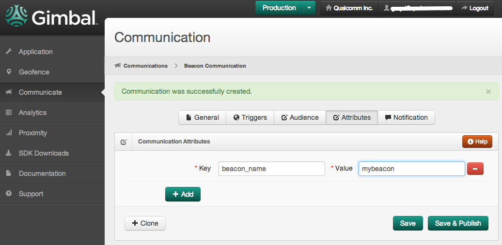

How to use a Beacon visit arrival to retrieve a Communication.
Use the Gimbal Manager to create a Communication that will be retrieved when you arrive at a beacon.
New buttonGeneral tabNone on the Triggers tabAttributes tabNotification tab
The Gimbal Proximity framework enables proximity services within your application.
This framework is essential for your application to capture visits of nearby beacons.
Note The section for using the FYXSightingManager is optional for this particular guide.
The Gimbal Context frameworks provide the ability to retrieve content from the Gimbal Manager.
It's essential to setup the Context SDK within your application to access this content.
Note The sections for Creating a Geofence and using the QLContextPlaceConnector are optional for this particular guide.
Finally, Setup the Visit Manager and implement the FYXVisitDelegate protocol's didArrive: method.
Within this method, retrieve content from the Gimbal Manager using QLQueryForAnyAttributes described in the Context Developer Guide
The following example assumes the previously defined Communication Attribute was key=beacon_name and value=mybeacon.
- (void)didArrive:(FYXVisit *)visit {
{
QLQueryForAnyAttributes *queryForAnyAttributes = [[QLQueryForAnyAttributes alloc] init];
[queryForAnyAttributes whereKey:@"beacon_name" containsStringValue:visit.transmitter.name];
[self.contentConnector contentsWithQuery:queryForAnyAttributes
success:^(NSArray *contents) {
// If the transmitter.name matches "mybeacon", the contents parameter will contain the communication
} failure:^(NSError *error) {
// Failed to retrieve content
}];
}